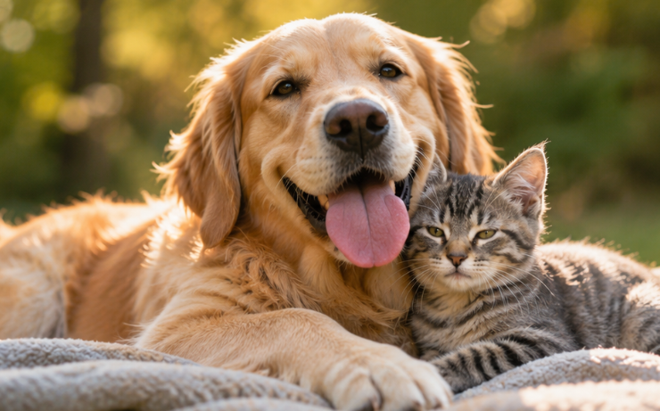
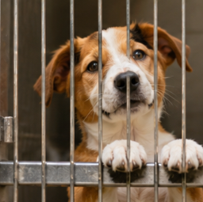
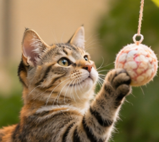
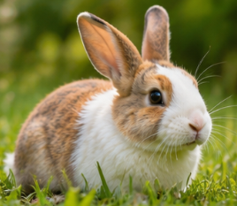
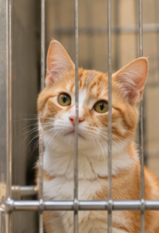
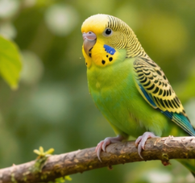
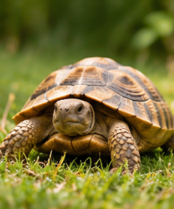
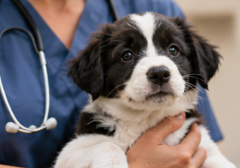
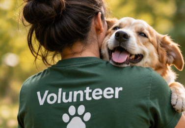
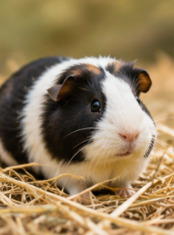

Rescue
We take in animals who are abandoned, surrendered or found in danger — and never turn one away because of age or health.
PawQuest rescues animals in need, nurses them back to health, and matches them with loving families for life. Dogs, cats, bunnies, birds — every one of them matters.

We believe every animal deserves to feel safe, cared for and loved. Our job isn't finished when an animal is rescued — it's finished when they're home for good.
We take in animals who are abandoned, surrendered or found in danger — and never turn one away because of age or health.
Veterinary care, good food, patient training and plenty of love help each animal recover physically and emotionally.
We carefully match every animal with the right family, so the home they find is a permanent one — not just a next stop.
A permanent home is the best medicine. That's why we support every family for life after adoption.
How we care for animalsEvery animal is health-checked, vaccinated and microchipped. Tap "Meet Me" to learn more about each one.
Showing 6 animals

Longest stayBiscuit greets everyone with a full-body wag. He's house-trained, leash-savvy and ready for a family of his own.

Part acrobat, part comedian. Mochi will chase a yarn ball for hours, then curl up for a well-earned nap.

New arrivalA calm, litter-trained bunny who enjoys fresh greens, gentle chin rubs and quiet afternoons.

A soft-spoken gentleman who warms up slowly, then never leaves your side. Loves sunny windowsills.

Kiwi chirps hello every morning and is learning to step onto a finger. A cheerful little companion.

Slow and steady, Shelly loves dandelions, warm stones and exploring the garden at her own pace.
Browse our animals online or visit the shelter. Not sure who's right? Our team can help.
A short form tells us about your home and lifestyle. It takes about 10 minutes.
Spend time together with an adoption counselor, and bring family or resident pets.
Sign the papers, take home a starter kit, and lean on our free post-adoption support.

Many animals arrive frightened, hurt or unwell. We give them all the time they need to recover.
Our rescue team brings animals in from the streets, shelters and difficult homes — day or night.
Every animal gets a full vet exam, vaccinations, treatment and spay/neuter surgery.
Foster families and trainers help animals rebuild trust and learn to feel safe with people.
Once they're healthy and happy, we write their profile and start looking for the perfect family.
Open your home, give your time or make a gift. Every bit of kindness reaches an animal in need.
Give a rescued animal a permanent, loving home and gain a best friend for life.
Meet Our AnimalsWalk dogs, socialize cats, foster, or help at weekend adoption events.
VolunteerFund food, medicine and surgeries. 100% of your gift goes to animal care.
Donate
VolunteerNo experience needed — just kindness and a couple of hours a week.
Your gift pays for food, vaccines, surgeries and a warm bed while animals wait for their family. Donations are tax-deductible.
The stories below are fictional examples created for this prototype.
“We came in for one dog and left with a best-friend duo. Duke and Pip still nap in the same sunbeam every afternoon.”

“Oreo was so shy when we met him. Now he squeaks a hello every time he hears the fridge open.”